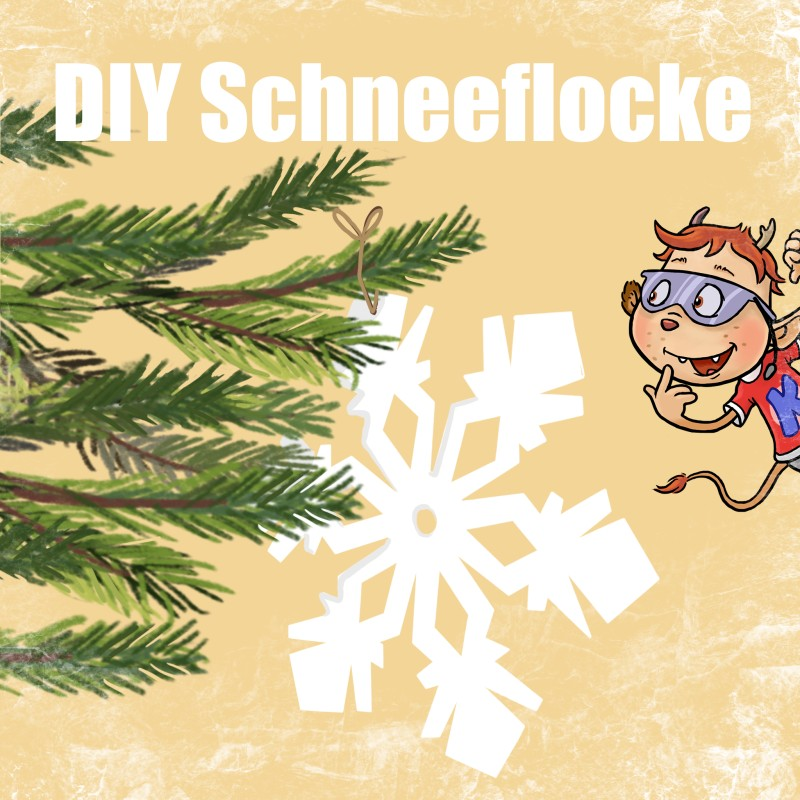

Weiße Weihnacht ist doch das Schönste, was es gibt. Doch was, wenn gar kein Schnee liegt? Dafür hat KABU eine Lösung: Er zeigt dir heute, wie du eine Schneeflocke aus Papier bastelst, die du dann anschließend an euren Weihnachtsbaum oder an euer Fenster hängen kannst.
Außerdem gibt es wieder ein Video, diesmal zur Fragen, warum wir uns zu Weihnachten einen Baum ins Wohnzimmer stellen. Viel Spaß damit!
Video: Weihnachtsbaum
Schneeflocke basteln
Diese Dinge brauchst du:
- weißes oder buntes Papier
- 1 Teller
- 1 Stift
- 1 Schere
- einen kurzen Faden
.jpg)
Und so funktioniert es:
- Zuerst nimmst du dir ein Blatt Papier zur Hand und legst den Teller drauf. Diesen umrandest du mit einem Stift und schneidest den gemalten Kreis aus.
.jpg)
- Der ausgeschnittene Kreis, wird dann dreimal in der Hälfte gefaltet, so dass er die Form eines Pizzastücks bekommt.
.jpg)
- Nun wird mit einem Stift auf das gefaltete Papier ein Muster gemalt. Dabei kannst du deiner Kreativität freien Lauf lassen. Dieses Muster schneidest du dann mit einer Schere aus und faltest anschließend das Papier wieder auf.
.jpg)
- Als letzter Schritt wird mit einer Schere vorsichtig ein kleines Loch in die Schneeflocke gestochen, wodurch der Faden gezogen wird. Diesen verknotest du dann noch ganz fest und schon ist deine selbst gebastelte Schneeflocke fertig!
.jpg)
Deine Schneeflocke kannst du nun überall dort hinhängen wo du möchtest und euer Zuhause wirkt gleich sehr viel weihnachtlicher :)
.jpg)
Viel Spaß beim Basteln und eine schöne Weihnachtszeit wünscht dir
das KABU-Team